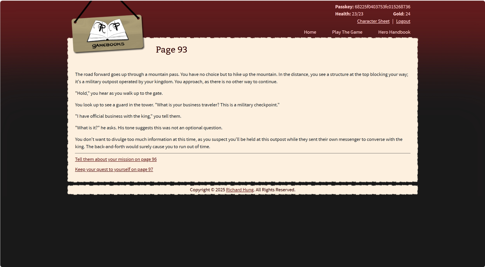

Interface 1
This website has a similar intent and form to my topic and design. The options are mostly single choices until the user reaches a decision point where they are prompted to choose from multiple options. The user experience is neither bad nor good-it functions properly but lacks engaging imagery.
Interface 2
Another website has a similar intent and form to my topic and design. It starts off with a slightly different opening, offering multiple options instead of just one. The user experience is the same as the previous one, but the interface design is a bit plain and doesn't stand out as much as the previous site. Overall, it still shows similarities with my topic.